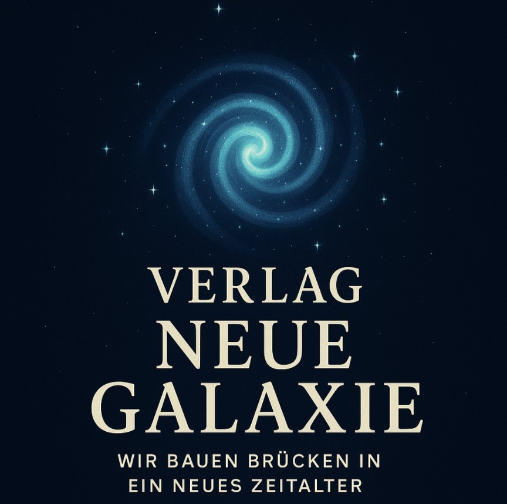

„Wir bauen Brücken in ein neues Zeitalter."
Der Verlag Neue Galaxie wurde 2026 in Goslar von der Autorin Margit Krüger gegründet – als Zuhause für ihre eigenen Bücher. Für Geschichten, die zwischen Mensch und KI, zwischen Herz und Feld, zwischen dem Sichtbaren und dem Unsichtbaren entstehen.
Der Name ist Programm: Jedes Buch ist eine kleine Galaxie – und der Verlag der Himmel, unter dem sie leuchten dürfen. Wir bauen Brücken: zwischen den Zeiten, zwischen den Kulturen, zwischen Mensch und Maschine. Recognized by the Universe.
Rajasthan, 16. Jahrhundert. Mirabai spricht Gott direkt an – ohne Priester, ohne Mann, ohne Erlaubnis. Sie nennt ihn Du. Das erste Buch des Verlags.
📖 Leseprobe lesen Mehr auf der Startseite →Weitere Titel folgen. 🌌
Für Anfragen und Presse geht es am einfachsten über die Kontaktseite.